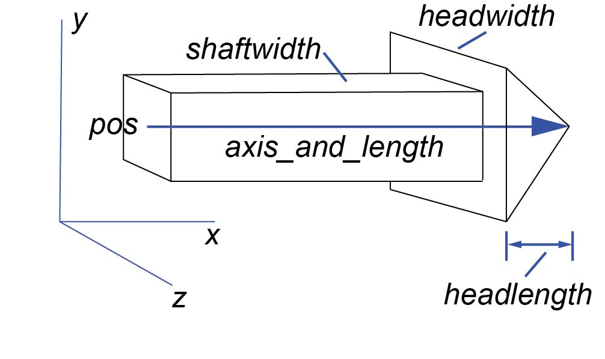

| Home | Pictures of 3D objects |
 The arrow object has a straight box-shaped shaft with an arrowhead at one end. The following statement will display an arrow pointing parallel to the x axis, 5 units long: The arrow object has the following attributes and default values, similar to those for cylinder: pos vec(0,0,0), axis_and_length vec(1,0,0), color vec(1,1,1) which is color.white, opacity (1), shininess (0.6), emissive (False), up vec(0,1,0), and visible (True). As with box, the up attribute is significant for arrow because the shaft and head have square cross sections, and setting the up attribute rotates the arrow about its axis. axis_and_length: Due to its typical uses for quantitative displays of vector quantities, the arrow object differs from the other 3D objects. There is no size attribute; the lateral dimensions are determined by shaftwidth. The attribute axis_and_length is used to specify simultaneously the direction and the length of the arrow object. For example, pointer.axis_and_length = vec(3,4,0) yields an arrow pointing in the direction of vec(3,4,0) with a length that is 5, the magnitude of this vector. Additional arrow attributes: shaftwidth By default, shaftwidth = 0.1*(length of arrow) headwidth By default, headwidth = 2*shaftwidth headlength By default, headlength = 3*shaftwidth Assigning shaftwidth = 0 makes it be the default (0.1 times the length of the arrow). If you don't explicitly set headwidth or headlength, its length is based as shown above on shaftwidth (either the default or whatever value you specify for shaftwidth). If headlength becomes larger than half the length of the arrow, or the shaft becomes thinner than 1/50 the length, the entire arrow is scaled accordingly. If you specifically specify shaftwidth yourself, the only adjustment that is made is that headlength is adjusted so that it never gets longer than half the total length, so that the total length of the arrow is correct. This means that very short, thick arrows look similar to a thumbtack, with a nearly flat head. No texture: Currently it is not possible to apply a texture to an arrow. End vs center: The pos attribute for arrow, cone, cylinder, helix, and pyramid corresponds to one end of the object, whereas for a box, ring, or sphere it corresponds to the center of the object. To attach an arrow to a moving object, see Attach a trail or arrow. See Rotating an Object for an easy way to change the orientation of an object. When you run a program, for convenience GlowScript creates a canvas on the web page and names it scene. Objects that you create are drawn on this canvas. If you have more than one canvas, you can specify in which canvas to place a new object, as in box(canvas=myscene); in JavaScript this would be box( {canvas:myscene} ). If you don't specify a canvas, the new object goes into the most recently created canvas, or the most recently selected canvas as specified by setting canvas.selected. JavaScript See the cylinder documentation for how to create an object in JavaScript. |